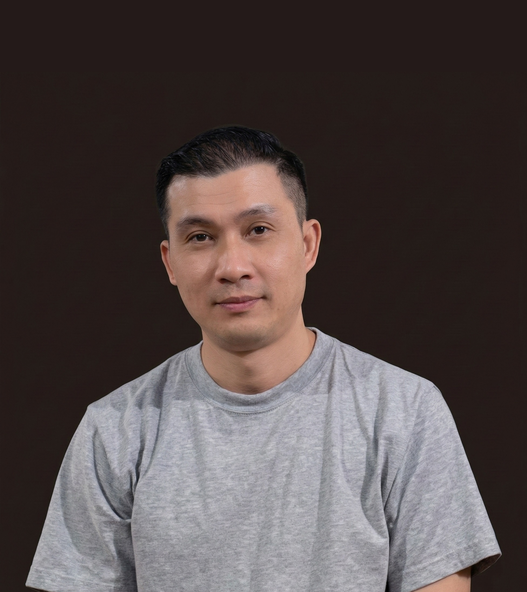

The USPS Mechanic Who Minds His Own Business — But Takes Care of Himself
I live quietly in California. Built a steady life in the U.S. through consistency, self-reliance, and a strong work ethic. My job involves diagnosing, repairing, and maintaining high-speed mail processing machines — the backbone of the nation's postal system.
Debt-free. No unnecessary subscriptions. No financial chaos. Just clean simplicity — steady income, reasonable savings, and personal control. That quiet control, not luxury, defines my sense of peace.
Introverted, pragmatic, and highly independent. I don't talk much, don't chase social validation, and rarely involve myself in unnecessary drama. If someone irritates me, the reaction is brief — irritation passes, focus returns to tasks at hand.
At work, I collaborate but never compete for attention. My satisfaction comes from fixing complex mechanical issues others can't. That niche competence gives me quiet pride.
I don't need to impress anyone. I prefer competence over conversation. Still, there's a curiosity blooming beneath that calm — a wonder about the wider world beyond steady routines.
I grew up poor in Thailand but never used that as an excuse. Instead, it served as fuel for self-discipline. Against statistical odds, I earned a Master's degree from Thammasat University — one of Thailand's top institutions.
I now live independently in Los Angeles, proud of a clean record: no drugs, no gambling, no shortcuts. Every accomplishment came from consistent effort and long hours.
That discipline continues today — USPS maintenance mechanic by day, cybersecurity student and pilot trainee by night. My story isn't dramatic. It's methodical. Progress is quiet but certain.
An honest record of daily structure, evolving habits, and the systems that keep things running.
I drive about 20 minutes through early-morning Los Angeles traffic to reach the Pasadena plant, where the hum of machinery sets the rhythm of the day. The work is physical, technical, and structured — perfect for someone who values order and tangible results.
The drive home — about 30 minutes through Silver Lake to Santa Monica Boulevard — marks the transition back into personal life. Evenings are simple: eat, unwind, and usually play a game before going to bed around midnight.
Days off are reserved for domestic resets. Laundry, grocery shopping, light errands — all within a 3-mile radius. The structure gives balance. Stability breeds clarity.
For years, gaming filled my evenings across three platforms. On PS5, EA Sports FC 26 — focusing purely on player evolution and card collection, intentionally avoiding microtransactions. Progress must be earned, never purchased.
On PC, Hearts of Iron IV on Steam — a detailed grand-strategy game that sharpens analytical thinking: resource management, planning, logistics. Skills that overlap directly with engineering maintenance and cybersecurity.
On mobile, Genshin Impact for three years — spending only occasionally. But recently, something changed. The desire to grind digital missions began to fade.
I realized that time is a non-renewable resource — and hours spent farming virtual rewards could be redirected toward certifications, career goals, or physical health. Quitting gaming isn't rejection. It's evolution.
My health reflects quiet balance. The migraines that once bothered me vanished last year. I don't spend hours at the gym, but I stay active through monthly hikes at Griffith Park, walking 1–3 miles each session.
No trend diets. No fitness influencers. Just genuine, manageable physical upkeep. At my age, sustainability matters more than intensity. The goal is not bodybuilding — it's function and endurance.
I manage finances with quiet precision. Income covers all essential expenses, and I save regularly. Having no debt is not just a financial status — it's a mental advantage.
I am exploring a second job — not from financial desperation, but purpose. Areas of interest: IT and Healthcare. Both share long-term demand and upward mobility. Rather than dabble in risky trends, I think in executable systems: structured, certification-based professional upskilling.
I currently study two fields simultaneously: IT & Cybersecurity at Los Angeles City College and Pilot Training at Glendale Community College.
The combination might look unusual — but not for me. IT satisfies logic and precision; aviation fulfills curiosity, freedom, and challenge. The overlap between both: systems thinking, situational awareness, and responsibility.
My only concern is burnout. I combat this by structuring tasks around natural time windows — morning alertness for studying, post-shift slots for reading, weekends for assessments. No procrastination. Assignments are completed early. Front-load tasks, avoid last-minute stress. So far, it's working.
A record of things built — coursework, tools, and systems in progress.
Python exercises and lab assignments for CS101 at Los Angeles City College. Includes foundational programs and structured labs — a working record of coursework as I build toward IT Cybersecurity.
Self-directed study roadmap from CompTIA A+ through PenTest+. Maps each certification phase to LACC coursework and TryHackMe labs — 440 to 650+ hours across four structured phases.
Personal development tracking system with automated weekly reminders, quarterly goal reviews, and structured progress logging. Built with GitHub Actions — zero manual maintenance required.
You found me.
I fix machines for a living,
study cybersecurity at night,
and train to fly on weekends.
Still not sure which one is the real job.